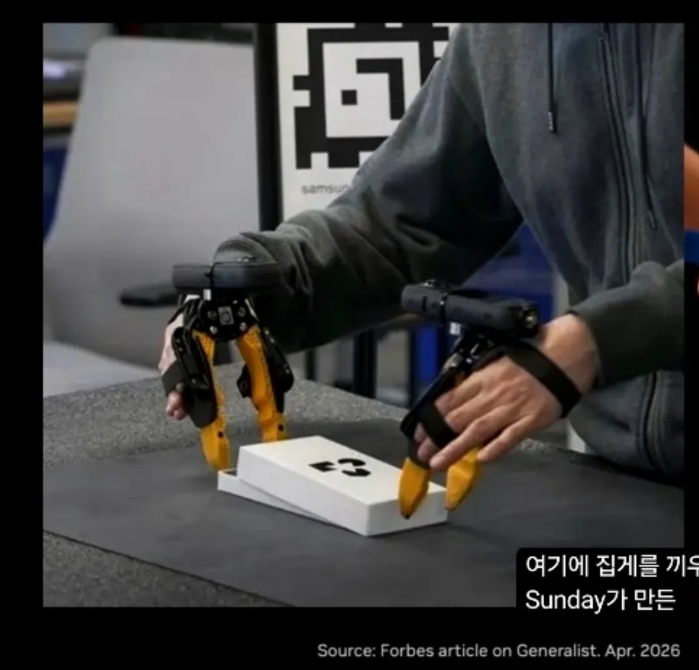

What it is
휴대형 hand-held gripper + GoPro 기반 in-the-wild 로봇 데모 수집 인터페이스. 사람이 그리퍼를 직접 들고 일상 환경에서 task를 수행하면 그 모션이 로봇 정책 학습 데이터가 된다. 즉 "로봇 없이 로봇 데이터를 만든다".
Origin
- 2024, Columbia / Shuran Song Lab — Cheng Chi(현 Sunday Robotics CTO co-founder)가 박사과정 중 발표.
- 이전 자산과의 연결: 같은 저자의 Concept-DiffusionPolicy (2023, Best Paper)와 짝을 이룸 — UMI로 모은 데이터 → Diffusion Policy로 학습이 자연스러운 파이프라인.
- 선구 자산: ALOHA(텔레op 기반 양손 데모) → UMI(hand-held로 단가 ↓, in-the-wild ↑).
Lineage (계보)
[Paper-UMI-Chi-2024 @ Columbia]
│
├──→ [[Company-SundayRobotics]] : "Skill Capture Glove" 로 진화
│ - 글러브 폼팩터(그리퍼→웨어러블), $200, 2,000+개 분산 운영
│ - 500가정 / 10M episode / "Memory Developers" 운영팀
│ - ACT-1 사전학습 데이터 100% 차지 ("zero robot data")
│
└──→ [[Company-GeneralistAI]] : **Sunday Robotics가 만든 UMI-계열 그리퍼를 사용**
- 출처: Forbes article on Generalist, 2026-04
- 폼팩터: hand-held parallel gripper × 2 (양손) + 손목 스트랩 + 도크 스테이션
- 의의: GenAI는 모델/데이터 철학("from scratch + wearable 50만h")은 독자적이지만, **데이터 수집 하드웨어는 Sunday로부터 조달** — UMI/Glove 학술 자산이 산업 공급망까지 확장된 사례
- 잔여 질문: GenAI 자체 "data hands" 라인이 Sunday 그리퍼와 별도인지/병행인지
Generalist가 사용 중인 Sunday-made hand-held gripper. Source: Forbes article on Generalist, Apr. 2026.Adopted by (자동 — 백링크/dataview)
Adopted by (auto):
- Company-SundayRobotics (Company)
Variants & Comparison
| 변형 | 회사/논문 | 폼팩터 | 단가 | 운영 규모 |
|---|---|---|---|---|
| 원본 UMI | Chi et al. 2024 | hand-held parallel gripper + GoPro | 학술 prototype | 단일 랩 |
| Skill Capture Glove | Company-SundayRobotics | 웨어러블 글러브 | ~$200 | 2,000+ / 500가정 |
| Sunday-made gripper (조달) | Company-GeneralistAI | hand-held parallel gripper × 2 + 도크 | 미공개 | Forbes 시점 데모 운영 |
Why it matters
- 단위경제 혁신: 텔레op rig (~$20K) 대비 100×. 분산 데이터 공장이 가능.
- "논문 도구 = 회사 1번 자산" 패턴: 학계 → 회사 thesis 직결. PI/Skild/Generalist도 동일 패턴(서로 다른 학술 자산이 회사로 이어짐).
- Foundation model의 입력 측 혁신: 모델 아키텍처가 아니라 데이터 수집 인터페이스가 경쟁력의 핵심이 됨.
References
- arXiv:2402.10329
- 프로젝트 페이지: umi-gripper.github.io (캡쳐 요청 시 보안 검토 후 사용자가 가져올 것)